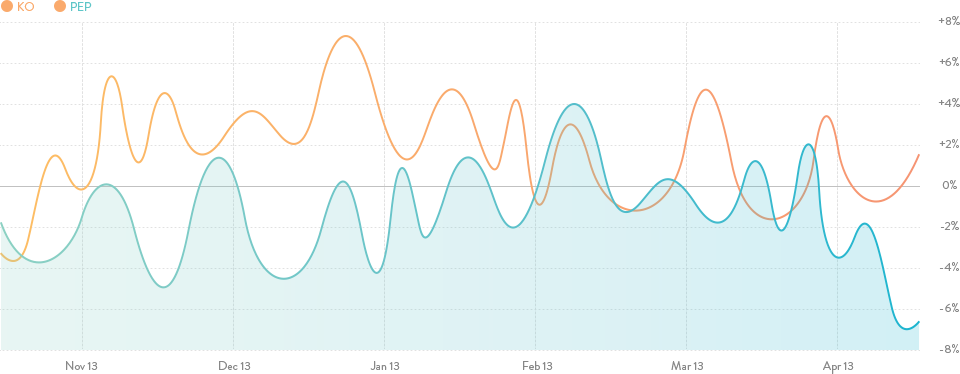

Trade Like A Hedge Fund
Using Pairtrade Finder, the world's leading pairs trading software. Free stock data -
Backtest 10 years - Real Time Buy/Sell signals
Using Pairtrade Finder, the world's leading pairs trading software. Free stock data -
Backtest 10 years - Real Time Buy/Sell signals

No more vague technical indicators. Pairtrade finder provides clear cut trading signals telling exactly when to enter and exit trades
No need to pay or manually import stock data. Pairtrade finder software automatically pulls free stock data every 15 minutes
The answer is you can't, that is why Pairtrade finder has a dedicated backtester built-in to prove the system works
Pairs trading also known as market neutral, statistical arbitrage, long/short and spread trading is the most popular trading strategy amongst hedge funds. The reason being is that profit can be made regardless of market direction. Pair-trading simultaneously buys one stock while short selling another highly correlated stock when the relationship between the two stocks is "out of wack". When the stocks come back "inline" the trade is closed.
Studies show that over 90% of traders don't take advantage of falling stock prices by short selling stock, which most brokers offer. Start short selling like the big boys using Pairtrade Finder. No more being disadvantaged due to a lack of technological sophistication and resources. Investors and traders, big and small, can benefit from allocating at least a portion of their portfolio to pairs trading. Including pairs trading in a portfolio diversifies returns and decreases overall market exposure.
Pairtrade Finder is the special weapon in finding the best opportunities in the market at any given time. Pairtrade finder embraces market volatility.Install in under 5 minutes. All traders welcome - easy to use
Play videoSuccessful traders are not guessing which direction a stock market is headed. Instead they profit from what ever happens. Join a growing army of prosperous Pairtrade Finder users who profit from every market condition with clear cut trading signals.
Developed by an ex-investment bank member of staff, Pairtrade Finder is unlike any other trading software available. Nothing is as sophisticated yet simple to use. No experience is necessary. A complete user manual plus rapid support is provided to ensure smooth operation of Pairtrade Finder. The leader in pairs trading software.